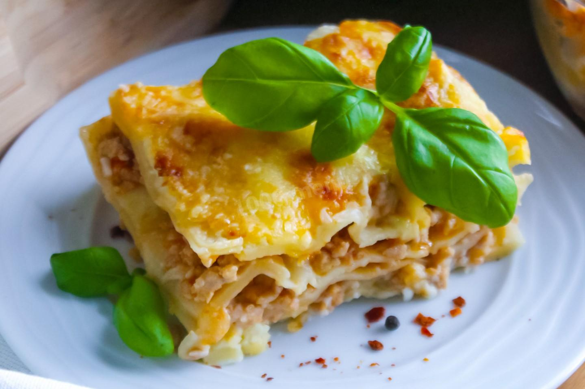

Лазанья

Описание
Лазанья — сытное итальянское блюдо, которое давно обрело всемирную популярность. Аппетитно
благоухающую томатами и чесноком итальянскую лазанью считают классикой кулинарии. Ее можно
приготовить самостоятельно на домашней кухне, если использовать проверенный рецепт.
Необходимые ингридиенты
- Фарш мясной - 800 г
- Помидоры - 2 шт
- Лук - 2 шт
- Листы лазаньи - 10 шт
- Чеснок - 2 зубч
- Томатная паста - 2 ст л
- Твёрдый сыр - 100 г
- Растительное масло - 1 ст л
- Соль - по вкусу
Приготовление
- Подготовьте необходимые продукты. Заранее включите духовку на 190 градусов.
-
Лук очистите и нарежьте произвольно некрупными кусочками. Чтобы лук при нарезке не щипал
глаза, обмойте его и нож холодной водой.
-
На сковороде разогрейте растительное масло и обжарьте на нём фарш и лук в течение пяти
минут, постоянно помешивая. Нужно постараться сделать так, чтоб из фарша не формировались
комочки в процессе обжаривания. О том, как выбрать сковороду и идеальное для жарки масло,
читайте в отдельных статьях, ссылки под шагами.
-
Чеснок почистите и мелко нарубите. Помидоры помойте и нарежьте кубиками. С помидора
предварительно можно снять кожицу. Для этого сделайте крестообразный надрез на каждом
помидоре, залейте их кипятком на одну минуту, после чего слейте воду. Благодаря этому кожица
с помидоров снимется без труда. Отправьте в сковороду к фаршу с луком томатную пасту,
нарезанные помидоры и чеснок. Добавьте соль по вкусу.
-
Всё хорошо перемешайте, убавьте огонь до среднего и тушите фарш под закрытой крышкой около
10 минут. На этом этапе можно добавить к фаршу щепотку базилика или другие любимые специи.
-
Пока тушится фарш, приготовьте соус Бешамель. Для этого в сотейнике на маленьком огне
растопите сливочное масло.
-
Всыпьте муку и, непрерывно помешивая венчиком, слегка её обжарьте на растопленном масле.
-
Постепенно влейте молоко, продолжая перемешивать массу венчиком, чтобы не образовалось
комочков. Посолите по вкусу и при желании добавьте черный молотый перец. Также можно
добавить щепотку молотого мускатного ореха для более классического и интересного вкуса.
Доведите смесь до консистенции густых сливок, снимите с огня и остудите.
-
Дно формы для запекания смажьте растительным маслом или застелите пекарской бумагой. Залейте
дно соусом Бешамель. О том, какую лучше выбрать форму для запекания, читайте в статье,
ссылка под шагами.
-
Первым слоем выложите листы для лазаньи. Если вы используете маленькую форму, в которую с
трудом помещается сухой пласт, то листы лучше подержать в кипящей воде около 2-3 минут. Так
они станут мягкими и податливыми, и их без труда можно будет уложить в любую форму, а лишние
края обрезать ножом. Сверху листы снова полейте соусом.
- Следующим слоем выложите фарш и слегла присыпьте его тёртым сыром.
-
Залейте фарш соусом. Выкладывайте так слои, пока не заполнится форма. Последний слой с
листами нужно очень хорошо залить соусом, особенно края, иначе есть вероятность, что лист
теста засохнет и пригорит в процессе приготовления.
- Завершающим слоем посыпьте тёртый сыр.
-
Отправьте лазанью в разогретую до 190 градусов духовку примерно на 30-35 минут.
Ориентируйтесь на то, что на лазанье должна образоваться аппетитная золотистая корочка.
Время приготовления может отличаться в зависимости от вашей духовки. Об особенностях работы
духовок читайте в статье, ссылка под рецептом. Готовое блюдо выньте из духовки и дайте
настояться около 10 минут. Разрежьте лазанью на порции и разложите по тарелкам. Приятного
аппетита!
На главную
Источник рецепта